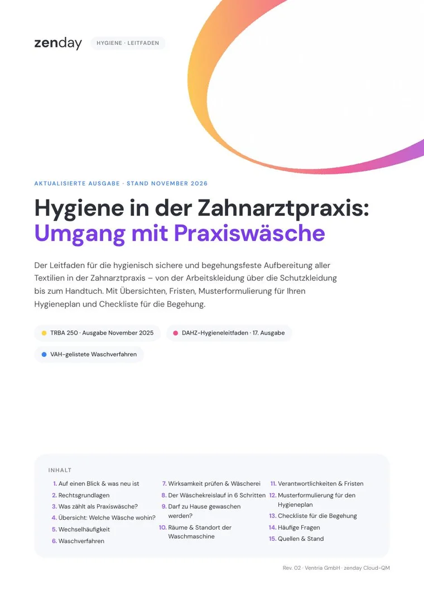

Ihr Leitfaden ist bereit.
Öffnen Sie das PDF und speichern Sie es ab. Beginnen Sie mit der Übersicht „Welche Wäsche wohin?“ – und übernehmen Sie den Baustein in Ihren Hygieneplan.
Falls Sie sich für weitere Praxis-Tipps angemeldet haben, erhalten Sie eine E-Mail mit einem Bestätigungslink.

So lief die Begehung in 2 Praxen
Zwei Praxen berichten, wie sie sich mit zenday auf ihre Begehung vorbereitet haben – und wie sie gelaufen ist.
Den Leitfaden im Alltag laufen lassen
Sehen Sie in 15 Minuten, wie aus dem Hygieneplan Aufgaben für Ihr Team werden: Wäscheregel, Listungsprüfung, Wirksamkeitstest und Unterweisung – sichtbar, erinnert und nachgehalten.
Ihre Praxis
Wir schauen gemeinsam, wie Sie QM heute organisieren.
Live in zenday
Sie sehen, wie die Fristen aus dem Leitfaden als Aufgaben mit Verantwortlichen laufen.
Ihr Fahrplan
Sie wissen, wie lange der Aufbau in Ihrer Praxis dauert.
Unsere Garantie: Ihr QM ist in 6 Wochen aufgesetzt, wenn Sie Ihre Onboarding-Schritte erledigen. Klappt das nicht, begleiten wir Sie kostenlos weiter und schenken Ihnen die Chat-Funktion für ein Jahr.